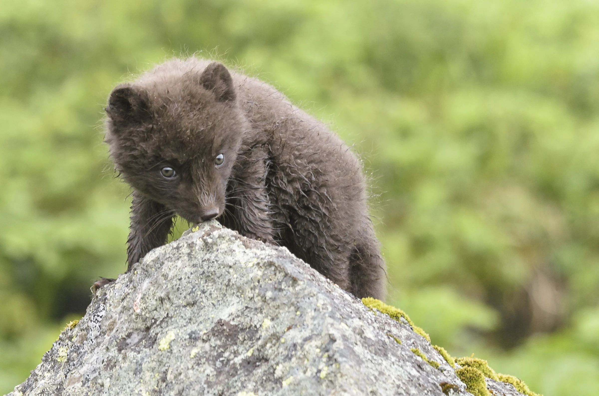
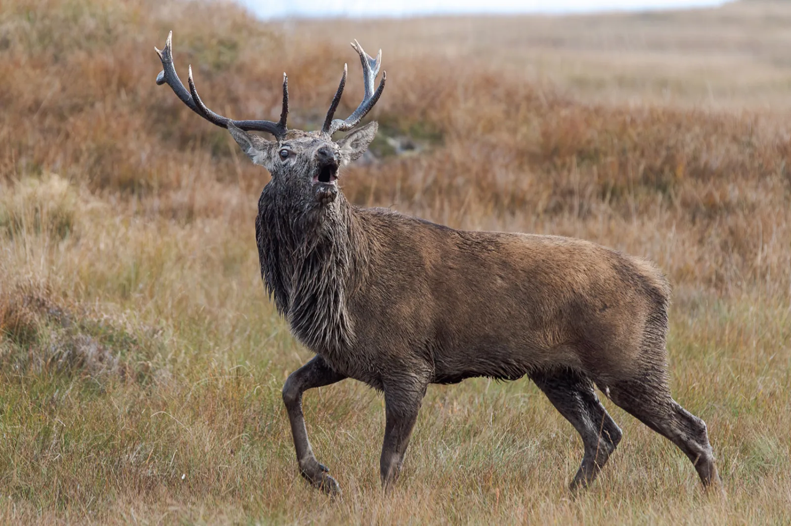
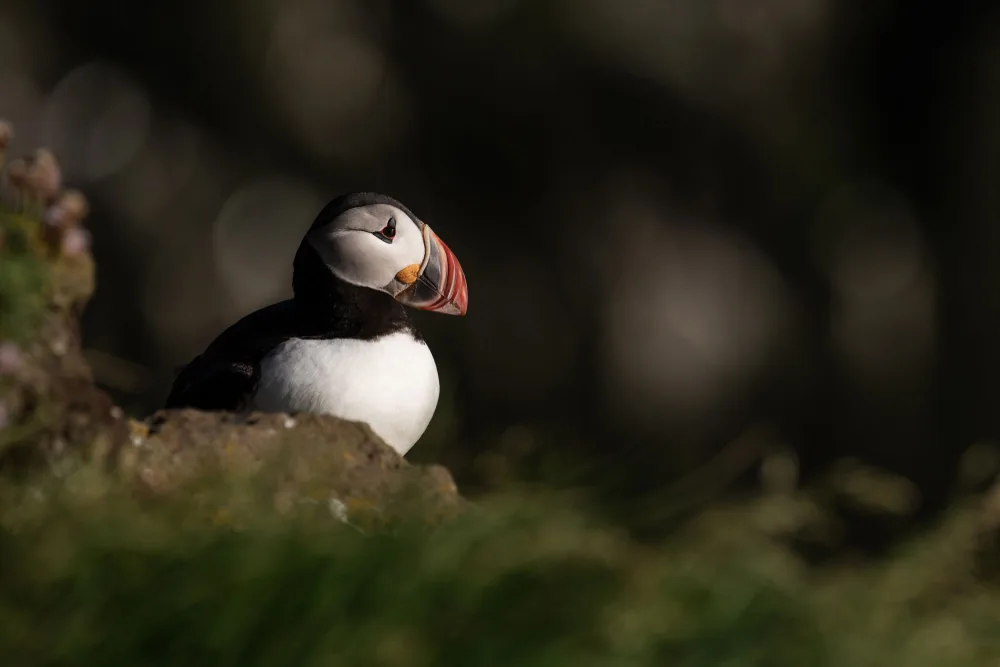
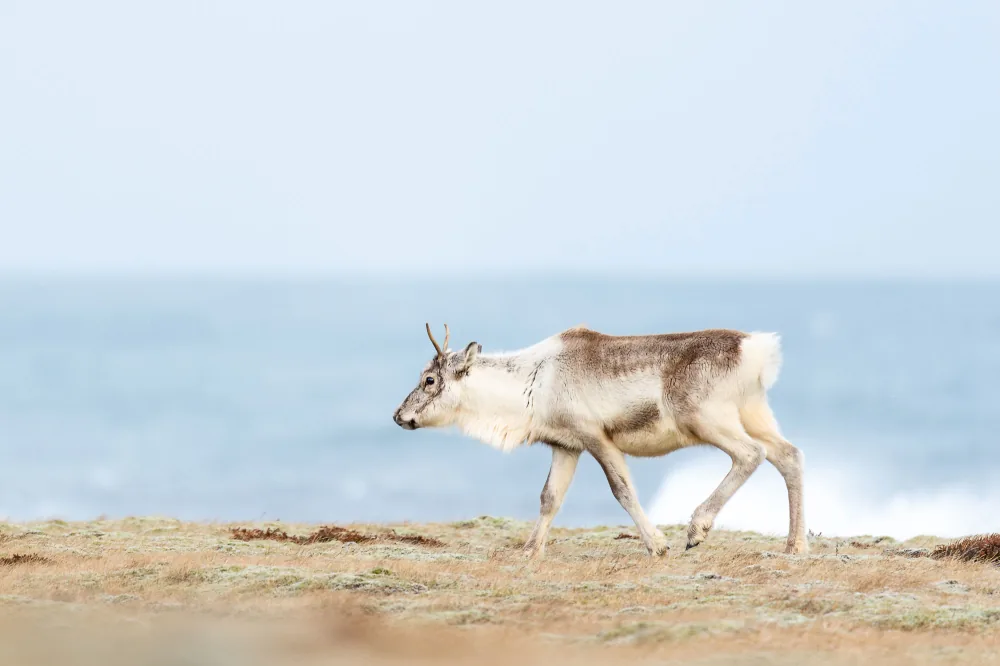
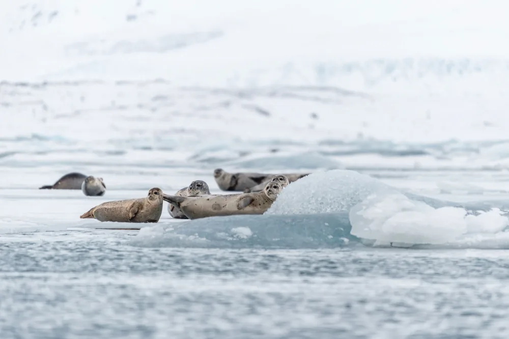
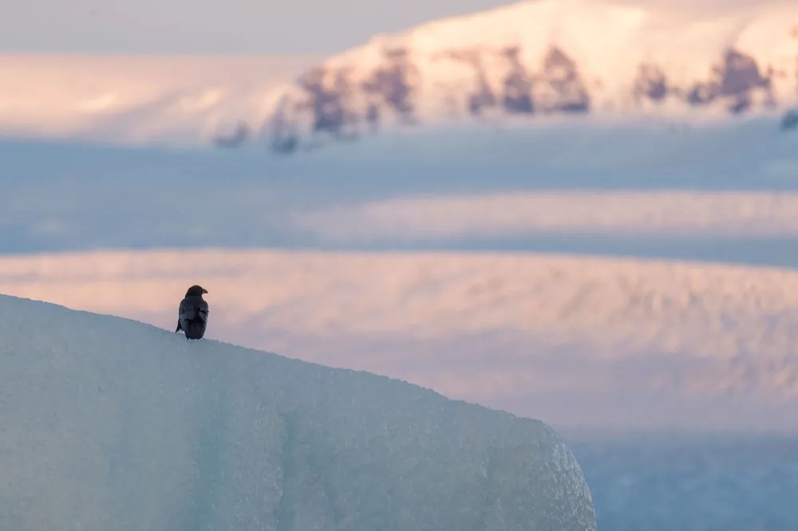

- Hornstrandir
- 8 days
- 4 to 10 guests
- All levels
Arctic fox
Hornstrandir nature reserve, Iceland. Based at the Hornbjargsviti lighthouse, reachable only by boat.
See the tour
Photo Travel · Ísafjörður · Iceland
You wait for the light, not the schedule
Wildlife Photo Travel runs photo expeditions in the most remote places we can reach. Arctic fox in Hornstrandir, red deer in Scotland, the Sahara in Algeria. Four to ten guests. Two to three guides.
scroll down
Isle of Jura · Scotland
We photograph where the weather decides the day, not the itinerary.
Hornstrandir nature reserve, Iceland. Based at the Hornbjargsviti lighthouse, reachable only by boat.
See the tour
Isle of Jura, Scotland. More than 6,000 red deer live on the island. 10 to 17 October 2026.
See the tourTassili n'Ajjer Cultural Park, Algeria. Tuareg territory, a UNESCO World Heritage Site and Biosphere Reserve.
See the tourBuilt around what you want to photograph, for small groups, at the pace the weather allows.
Ask usCuriosity, ethics and nature conservation sum up who we are. We keep the groups small so everyone gets real time in the field.
What we offer
Guided expeditions to Iceland, Scotland and Algeria
Technique and artistry in the field, all levels
Tailor made programs for small groups
What you photograph / Iceland




The place
A wild peninsula in the Westfjords, reachable only by boat, where people have not been able to settle. It holds the highest density of arctic fox in the world.
Our team is here to listen to your needs, and to build each program around the people on it. The strength of Wildlife Photo Travel lies in the dedication of its guides.
The team
Guides the wildlife side of every expedition: approach, behaviour, fieldcraft and the ethics of working close to animals.
Works on light, composition and the land itself, so the animal is never separated from the place it lives in.
“We had 8 amazing, unforgettable days in Hornstrandir. The conditions definitely pushed me at times, but we were more than rewarded with incredible fox encounters and breathtaking views. I'll have to come back!”
“I had a great time on the tour! Everything felt well organized and the length of time was good because it allowed us to get to know the area and decide where we wanted to spend our time. I'm looking forward to joining more trips!”